Life in Ashmaw
Ashmaw is harsh environment to survive as it is mostly just a barren muddy mess. It is quite wet throughout the year making the mud into a slush. So they get a lot of their food and water through caravans
that come through the Maw Market. The locals do their best to provide for the immediate town and utilize the adventuring nature of the Crevasse to sell trinkets, wares, and junk to supply the money for the
rest of what they may need. The adventuring groups that come and go aren't the greatest part of Ashmaw as they are often times routy and very greedy when it comes to the Crevasse. Many disappear or die when
they try to dive into the depths without proper knowledge or equipment.
Ashmaw is well known for mineral, metals, and artifacts that are brought up from the depths. They sell a lot of gemstones to the Magic Dealers that come through and plenty of souvenirs with the visiting population.
There are plenty of places to buy, sell, and trade the rewards from the depths of the Crevasse. The locals are very kind and generous people and if you carry your weight and show your character, you can grow
into becoming a local yourself.
Magic specifically Necromancy does have a place in Ashmaw. The Graveyard is by far one of the largest locations in Ashmaw as many a souls have departed this life here in Ashmaw. The locals will use this to there
advantage to make ends meet, prepare for hard times, and secure the supplies and resources that they need.
Places in Ashmaw
Deepwood Adventurer's Tavern
Owners: Mott Deepwood
Ashmaw Campsites
Ashmaw Junkyard
Buy, Sell, and Trade (Inside Junkyard)
Repair (Inside Junkyard)
Maw Market
Walk the Past Tavern
Owners: Milliecent and Curra Geon
Ashmaw Graveyard
Stables and Ferries
Crevasse Delights
Owners: Arma and Percival Delight
Bits and Pots
Owner: Gaten Austenwild
Oldie's Magic
Owner: Fredrick 'Oldie' Oldan
Sader's General
Owner: Sader Ben
Ashmaw Hospital
Origins
Following the events of the Ashen Greeting, a new sacred order of the youngest members of Ashmaw decided that never again would they endure the betrayal and slaughter of there own people to an uknown enemy. Bound by blood and an oath to each other, they formed The Shadow Guardians.
Perceptions of The Group
Sneaky. Deceptive. Cunningly smart. Agile. Defensive. Strong. All words that others would use to describe them, however if you approached the locals about this group, not much is known. The Locals are rather shocked to hear about a mysterious group operating in their home although the town of Ashmaw has been in a bend of good graces recently. Less attacks and strange vistors. Perhaps this local group is helping protect the town.
The adventurer's and merchants passing through though, they have more than a few not so nice things to say. Some adventurer's have gone missing. Some arrive with dreams of riches determined to find their place here and they next day they are packing their bags. Leaving for better horizons. Somewhere safer. Yet no adventurer exactly remembers why they are leaving, just that an experience they don't fully remember is compelling them too.
MORE ON THE SG TO COME AS DISCOVERED...
Promising Beginnings
For generations, necromancy has been an accepted and respected practice in the world. Particularly powerful necromancers often serve as community leaders, healers, historians, and guardians of the dead. The adults in these communities were powerful. They knew how to protect themselves, their families, and their homes. Unfortunately, that made them targets.
A mysterious organization began traveling from settlement to settlement, presenting themselves as scholars, healers, and practitioners of an unfamiliar branch of necromancy. They called themselves, The Mirrored Servants.
They claimed to have discovered a new form of necromancy that could protect communities from the rising darkness. They offered to teach it. They offered to help. And most importantly, they offered hope. The older necromancers welcomed them. They shared their knowledge, opened their homes, introduced them to their children, and allowed them into places that outsiders would never normally be permitted. Then came the night everything changed.
A Fated Evening
The Mirrored Servants had been studying powerful necromancers for years. They discovered that the strongest necromancers possessed something they called an Ancestral Anchor: a connection between their souls, their magic, and the generations of family members who came before them.
They wanted those connections or at the very least that power. And if they couldn’t take it, they would extinguish it. They developed a dark magic that could identify and consume these powerful connections, effectively killing the strongest necromancers and leaving their families vulnerable. But they needed the adults to trust them first. When the time came, they turned on the community.
The adult necromancers were slaughtered or consumed by the magic. Their homes were destroyed. Their families were scattered. Some children watched their parents die. Others hid beneath floorboards, in cellars, or inside old burial chambers. Some were forced to flee without knowing whether their parents were dead or alive. And some had to make the decision to leave their parents behind.
The Mirrored Servants deliberately left certain family members alive. Some were too young to be useful. Some were magically insignificant. Others were left behind as bait. The surviving young adults eventually discovered one another. They had all lost something, and they all knew the same thing. They couldn't trust anyone who claimed to be there to help.
MORE ON THE MIRRORED SERVANTS TO COME AS DISCOVERED...
Interactive Map

Locals of Ashmaw
The Delights
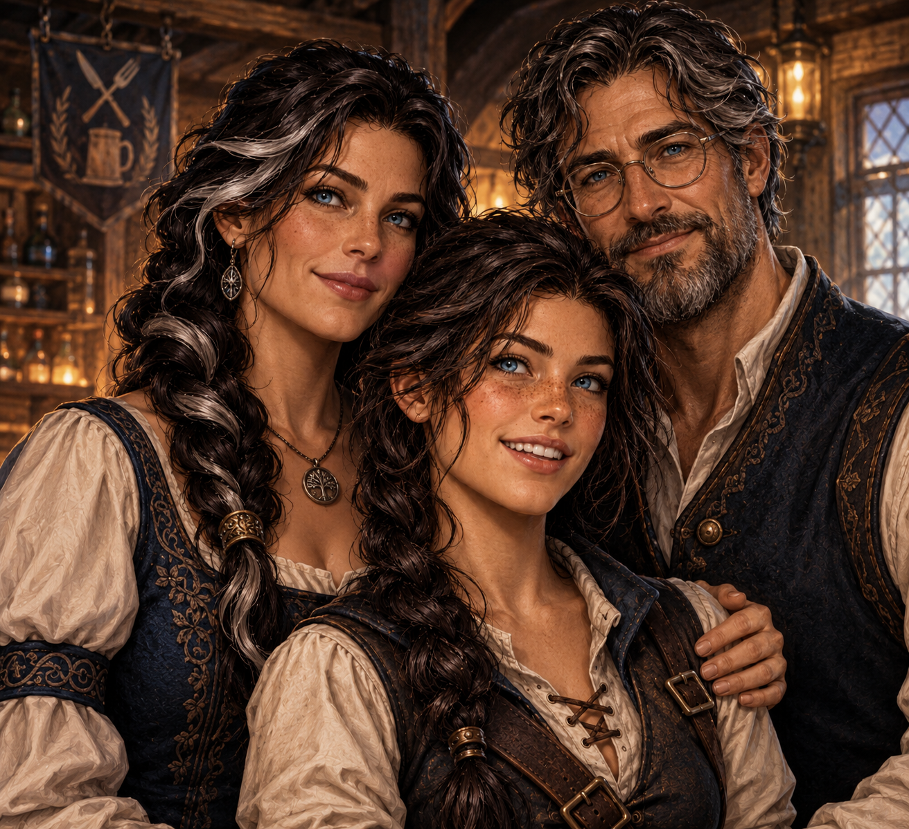
The Bens
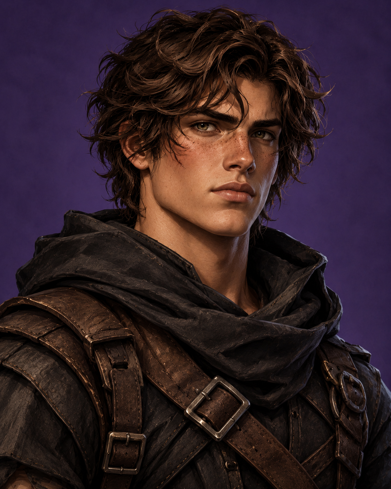
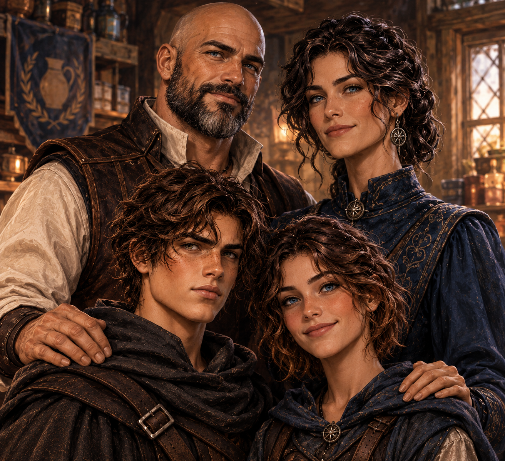
The Deepwoods
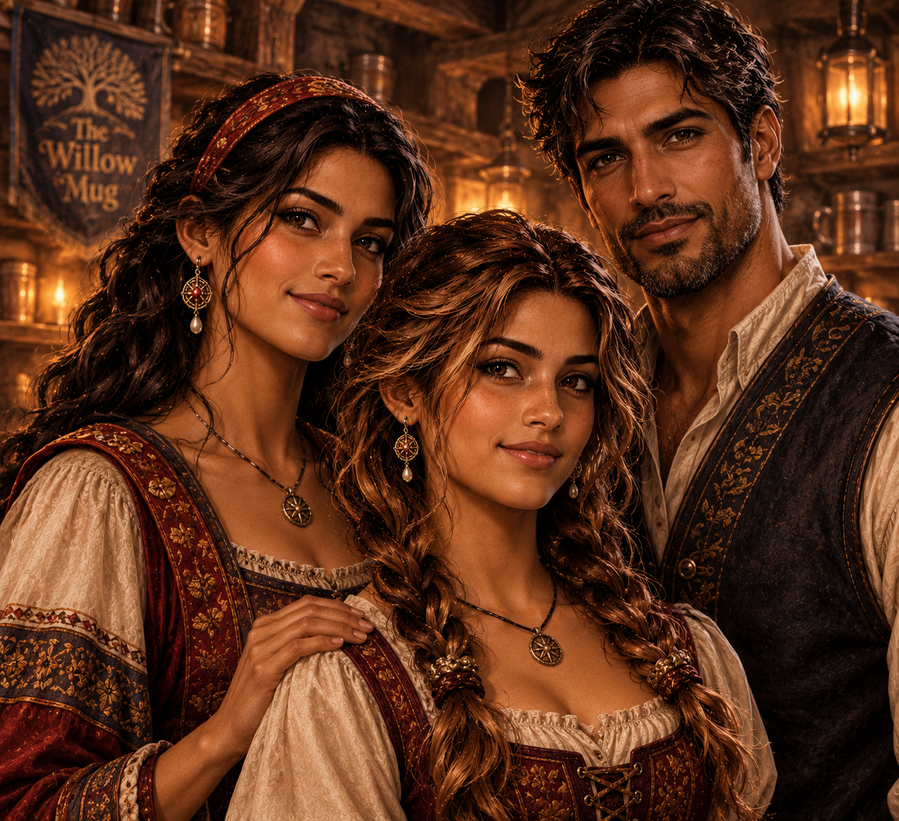
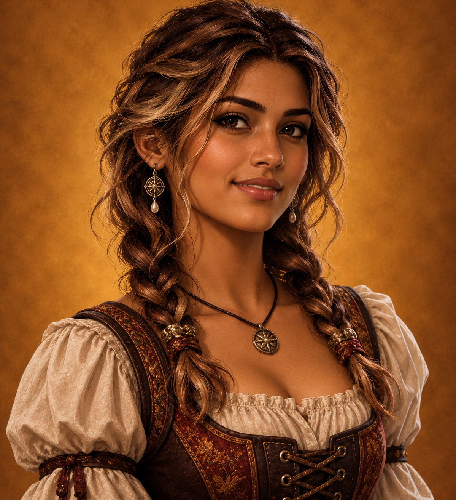
The Geons
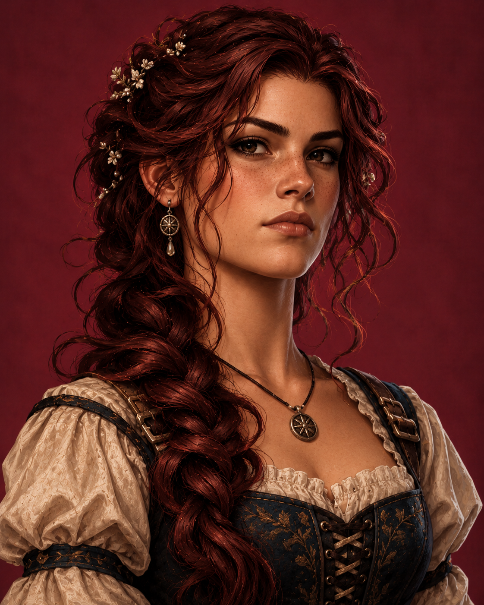
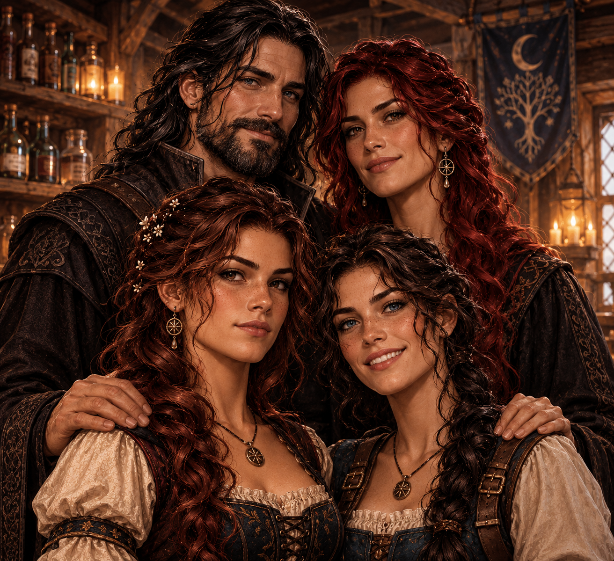
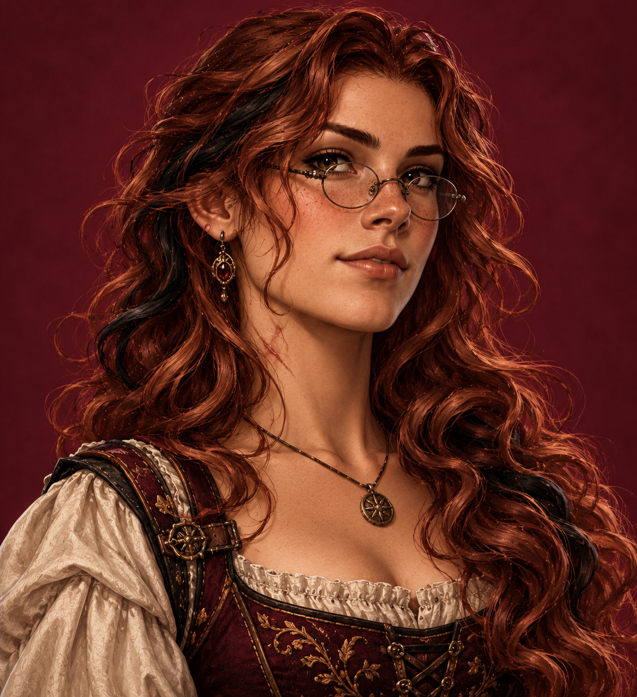
The Austenwilds
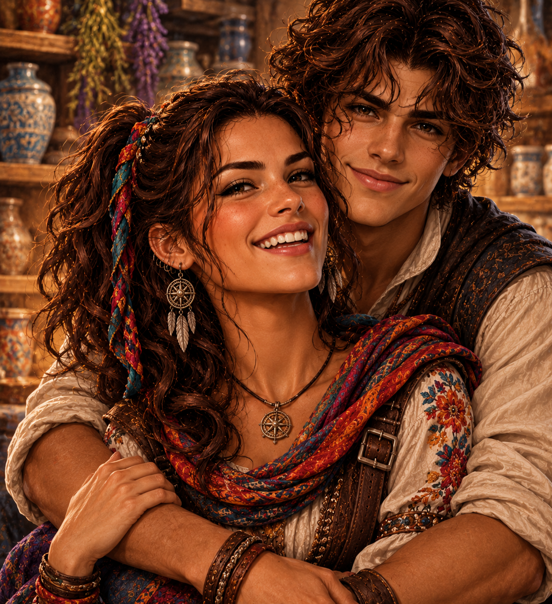
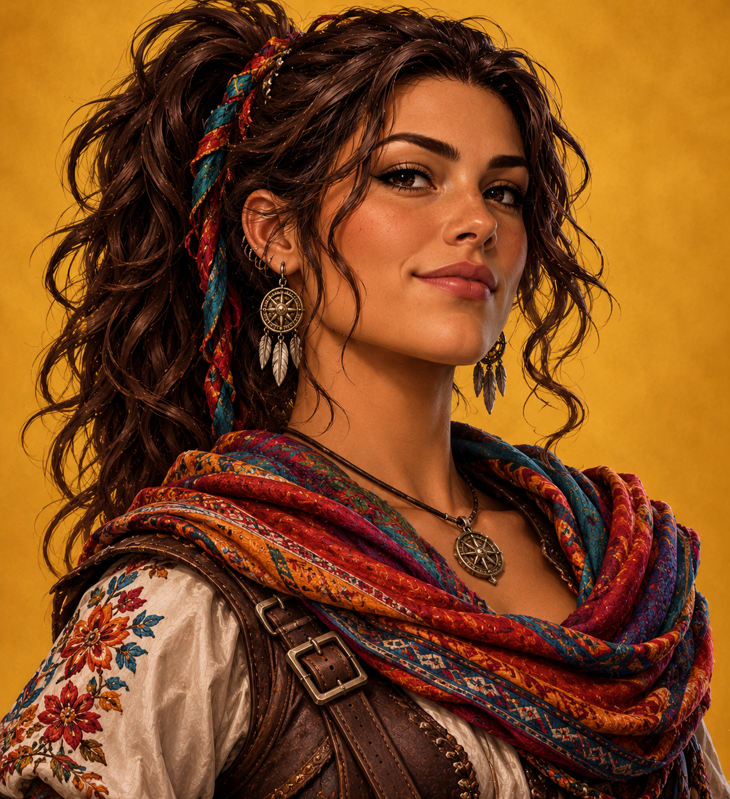
Caylen Nasser
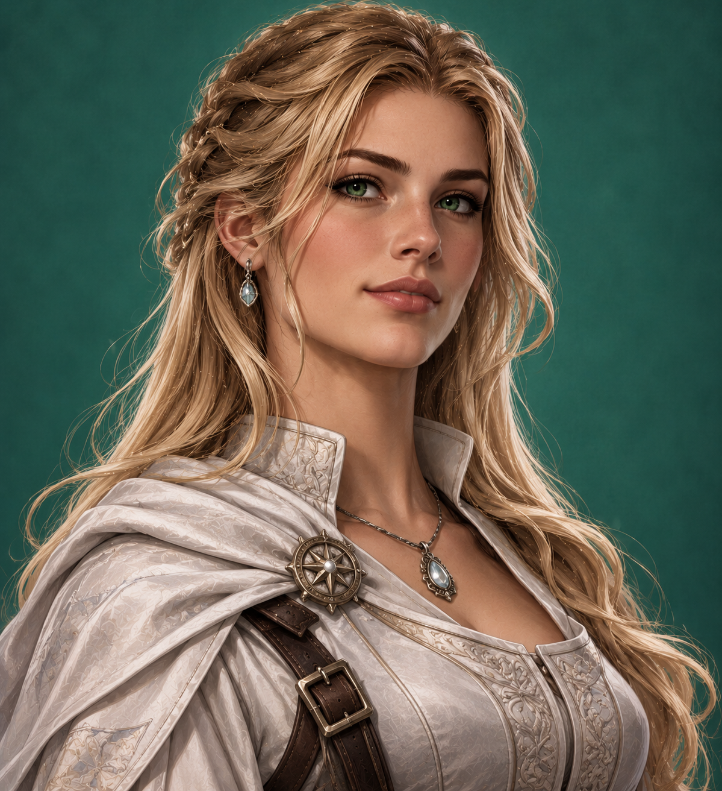